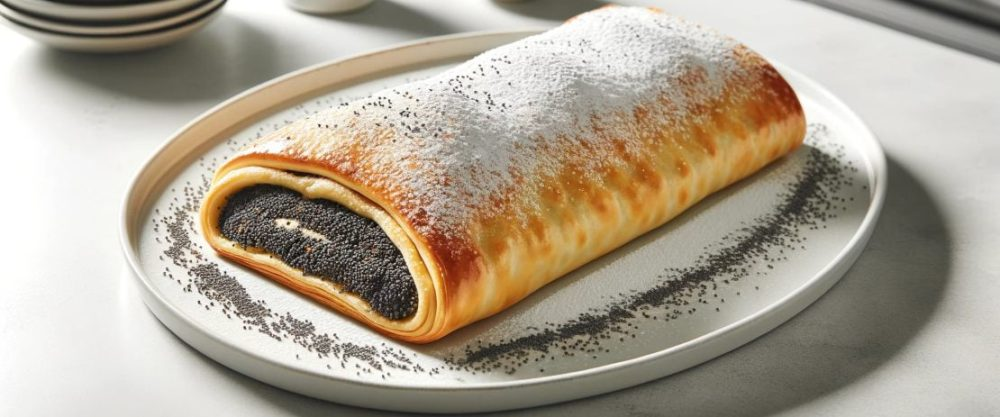

Šnenokle su lagane pufnaste kuglice od tučenih belanaca, kuvane u vodi i prelivene kremom od žumanaca, mleka i šećera. Ova tradicionalna balkanska poslastica je osvežavajuća i nežna, često posipana mlevenim keksom ili kokosovim brašnom.
Strudla sa makom je tradicionalni kolač koji se pravi od tanko razvučenog testa punjenog mlevenim makom i šećerom. Nakon što se testo obloži filom od maka, oblikuje se u rolnu, a zatim peče dok ne postane zlatno smeđa i hrskava.
Po želji, može se posuti šećerom u prahu ili preliti glazurom od šećera i limunovog soka. Ovaj kolač često se priprema za posebne prilike ili kao poslastica za različite svečane događaje..
Oblatne su popularna poslastica koja se sastoji od tankih slojeva hrskavog kolačića, obično punjenih kremom od šećera, putera i kakaa ili čokolade. Ovi slojevi se postavljaju jedan na drugi, obično se pritiskaju zajedno, a zatim se kolač seče na manje komade.
Oblatne su često omiljena poslastica na Balkanu, ali su takođe popularne i u drugim delovima sveta pod različitim imenima, poput "Neapolitanera" u Italiji ili "Dobosh torte" u Mađarskoj. Ova poslastica je jednostavna za pripremu i može se prilagoditi različitim ukusima i preferencijama.